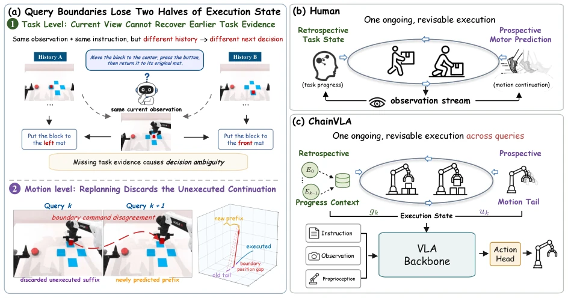
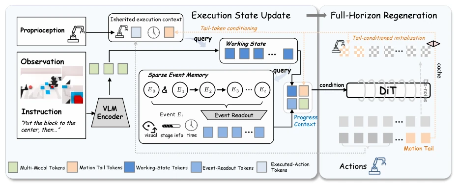
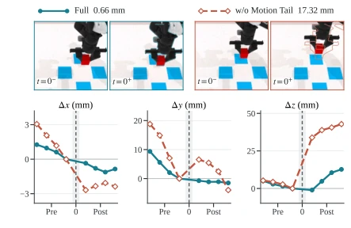
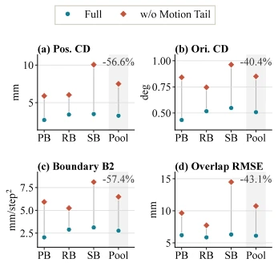

This ChainVLA paper essentially administers a 'memory life-support shot' to long-horizon operation VLA. 1.2B parameters outperform 8B+ competitors, indeed having substance. It avoids fancy world models, instead packaging 'unfinished actions from the previous round' and 'task progress' into a state to pass to the next round. The most incisive finding is that memory alone is insufficient; action continuity is the prerequisite for memory to be effective—akin to having a good memory but shaky hands, where recording is futile. However, while this 'state chain transmission' performs well in simulation, true hardware generalization remains to be seen, as RMBench is still biased towards simulation.
研究动机Motivation
现有 action-chunked VLA 策略（如 ACT, Diffusion Policy）每步都重规划，导致跨查询的任务进度和动作连续性丢失（Zhao et al. 2023）。现有记忆方法（如 MemoryVLA, MemER）只存观测历史，忽略了策略自身的预测意图（Shi et al. 2026b; Chen et al. 2026a）。这导致在部分可观测场景下，当前观测无法区分不同历史，且动作边界突变破坏后续观测流。ChainVLA 试图解决这个“状态交接”缺失问题，让 VLA 像人类一样既记进度又连贯动作。
Existing action-chunked VLA policies (e.g., ACT, Diffusion Policy) replan at every step, leading to loss of task progress and action continuity across queries (Zhao et al. 2023). Existing memory methods (e.g., MemoryVLA, MemER) only store observation history, ignoring the policy's own predictive intent (Shi et al. 2026b; Chen et al. 2026a). This leads to current observations being unable to distinguish different histories in partially observable scenarios, and action boundary mutations disrupt subsequent observation streams. ChainVLA attempts to solve this missing 'state handover' problem, enabling VLA to record progress and maintain coherent actions like humans.

Figure 1: Motivation and design of ChainVLA. (a) At each query boundary, earlier task evidence may be absent from the current view, while replanning discards the preceding prediction’s unexecuted continuation. (b) Human execution couples established task progress with a feedback-revised motor prediction, while executed motion shapes the observation stream used for subsequent progress estimation. (c) Inspired by this, ChainVLA carries both components across queries in a joint, revisable execution state comprising Progress Context gk and Motion Tail uk, which together condition each new action horizon.
方法Method
核心是构建跨查询的统一执行状态 $s_k = (g_k, u_k)$，替代传统的独立重规划。$g_k$ (Progress Context) 负责记忆，由 Recurrent Working State 和 Sparse Event Memory 融合而成。Working State 维护当前查询的 Live Tokens 和 FIFO 缓存，通过 Learned Working Queries 更新；Event Memory 则基于任务阶段或周期触发写入，检索时结合事件年龄编码。$u_k$ (Motion Tail) 负责动作连续性，直接缓存上一轮预测 $A_k$ 中未执行的后缀 $u_{k+1}$。在 Query 阶段，Decoder 接收当前观测 $x_k$、$g_k$ 和 $u_k$，通过 Conditional Flow 再生成完整 horizon。Motion Tail 通过两条路径介入：一是编码为 Tail Tokens 影响 Working State 构建，二是作为均值初始化动作生成。这种设计确保状态是可修订的先验，而非固定指令。训练时采用有序 Unroll，解耦后缀以优化梯度，推理时则直接传递。
The core is constructing a unified execution state $s_k = (g_k, u_k)$ across queries, replacing traditional independent replanning. $g_k$ (Progress Context) is responsible for memory, formed by fusing Recurrent Working State and Sparse Event Memory. Working State maintains Live Tokens and FIFO cache for the current query, updated via Learned Working Queries; Event Memory triggers writes based on task stages or cycles, combining event age encoding during retrieval. $u_k$ (Motion Tail) is responsible for action continuity, directly caching the unexecuted suffix $u_{k+1}$ from the previous round's prediction $A_k$. In the Query phase, the Decoder receives current observation $x_k$, $g_k$, and $u_k$, regenerating the complete horizon via Conditional Flow. Motion Tail intervenes via two paths: first encoded as Tail Tokens influencing Working State construction, second used as mean initialization for action generation. This design ensures the state is a revisable prior, not a fixed instruction. During training, ordered Unroll is adopted to decouple suffixes for gradient optimization, while during inference they are passed directly.

Figure 2: Overall query-transition architecture of ChainVLA. At query k, Progress Context combines live execution tokens from the recurrent Working State with event evidence retrieved from Sparse Event Memory. Motion Tail carries the preceding prediction’s unexecuted suffix into state construction and action generation. The decoder regenerates the full horizon under the latest query input; prefix execution then advances task progress, and the newly predicted suffix becomes uk+1 for the next query.
Tested on RMBench (memory-dependent) and LIBERO (breadth). ChainVLA reached 62.8% on RMBench, outperforming Mem-0 (52.8%) and MemoryVLA (19.6%). Reached 98.8% on LIBERO. Ablation shows removing Motion Tail success rate plummeted to 11.2%, removing Progress Context to 3.0%, proving action continuity is crucial for maintaining observation streams. Boundary error analysis (CDp, RMSE3) shows the Full scheme significantly outperforms the No-Tail scheme, and post-processing smoothing cannot replace model-side state transmission.

Figure 3: Illustrative Put Back Block boundary from paired- scene rollouts. Frames overlay the pre-boundary arm contour, and curves show right end-effector offsets from the t = 0 anchor. This single case has 0.66/17.32 mm position CD for Full/w/o Motion Tail. Figure 4 gives aggregate results.

Figure 4: Boundary errors for Full and w/o Motion Tail. PB/RB/SB denote Put Back, Rearrange, and Swap Blocks, and Pool weights their 20/30/30 rollout pairs. Lower is better. Panels (a–c) use executed commands and (d) final plans.